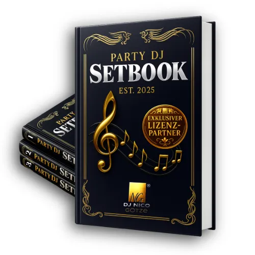
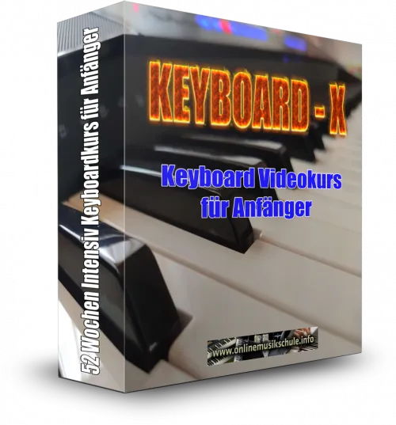
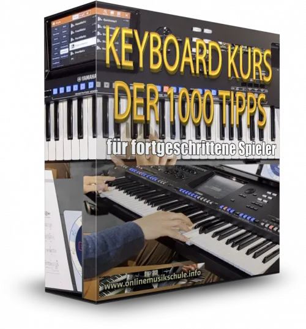
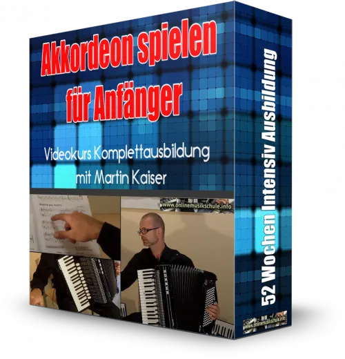
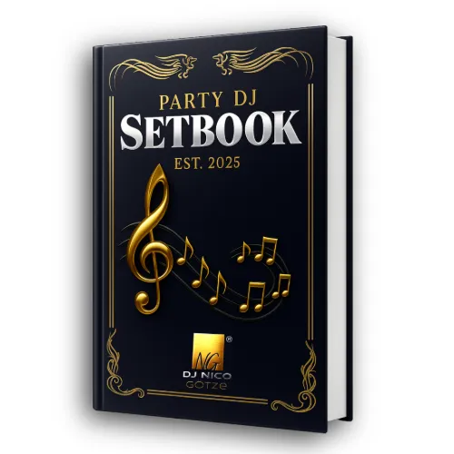

Party DJ Setbook - Business PRO-Lizenz (B2B)
Produktprofil · Marktplatz-Daten 2026-10-14 · Verkaufsseiten-Recherche 2026-10-14 · Kategorien: Dancing & Music
- Party DJ Setbook - Business PRO-Lizenz (B2B) ist ein/e Download in Dancing & Music, vertrieben über den Digistore24-Marktplatz von Anbieter djnicogoetze, gelistet seit 2026-06-26.
- Listenpreis $1453.32 (single payment) — Checkout, Auslieferung und Rückerstattungen laufen über Digistore24 selbst, nicht über den Anbieter.
- Käuferschutz: keine standardisierte Garantie-Formulierung gefunden — Rückerstattungsbedingungen vor der Zahlung auf der offiziellen Seite prüfen.
Interesse an Party DJ Setbook - Business PRO-Lizenz (B2B)? Aktueller Preis, Boni und Garantiebedingungen finden Sie auf der offiziellen Seite des Anbieters:
Offizielle Verkaufsseite ansehen
Affiliate-Link (Werbung) — wir verdienen ggf. eine Provision, ohne Mehrkosten für Sie.

Marktplatz-Daten
| Produkttyp | Download |
|---|---|
| Preis | $1453.32 (Single payment) |
| Garantie/Rückgabe | Laut Verkaufsseite des Anbieters — vor dem Kauf auf der offiziellen Seite prüfen |
| Anbieter | djnicogoetze (gelistet seit 2026-06-26) |
Marktplatz-Beschreibung des Anbieters
Die Party DJ Setbook Business PRO-Lizenz (B2B) richtet sich an Unternehmen, DJ-Agenturen, Veranstalter, Hotels, Clubs, Verleiher und Organisationen , die ihren DJs einen einheitlichen Qualitätsstandard für professionelle DJ-Sets zur Verfügung stellen möchten. Die Business PRO-Lizenz ermöglicht die gleichzeitige Nutzung durch bis zu 8 aktive Nutzer (Seats) innerhalb eines Unternehmens. Das Party DJ Setbook ist keine Playlist , keine DJ-Software und kein Autopilot . Es ist ein DJ-Navigationssystem , das bewährte Entscheidungswege statt einzelner Songvorschläge zeigt. Anstatt ständig zu überlegen „Was spielen wir als Nächstes?“ , arbeiten alle eingesetzten DJs mit derselben klaren Struktur und einem gemeinsamen Qualitätsstandard. Das Alleinstellungsmerkmal Im Gegensatz zu zahlreichen Songlisten und Playlist-Sammlungen, die lediglich Musiktitel auflisten, basiert das Party DJ Setbook auf einem durchgängigen Navigationssystem aus: bewährten 3er- und 5er-Setstrukturen einer strukturierten BPM-Navigation für stimmige Energieverläufe einer Camelot-Key-Struktur für harmonische Übergänge Dadurch entstehen nicht nur Songlisten, sondern nachvollziehbare Entscheidungswege, mit denen DJs schneller passende und professionell aufgebaute DJ-Sets zusammenstellen können. Enthalten sind 605 praxiserprobte DJ-Sets über 2.400 Partyhits aus 70 Jahren Musikgeschichte 5 Hauptgenres (Pop, Rock, EDM, Urban, German) über 40 Subgenres bewährte 3er- und 5er-Setstrukturen BPM- und Camelot-Key-Navigation digitales PDF Sofort-Download Business PRO-Lizenz für bis zu 8 aktive Nutzer (Seats) personalisierte Unternehmenslizenz Wichtiger Hinweis Das Party DJ Setbook enthält keine Audiodateien, keine Musikdownloads, keine MP3-Dateien, keine Streaming-Playlists und keinen Zugriff auf Musikstreaming-Dienste. Es handelt sich ausschließlich um ein strukturiertes DJ-Navigationssystem mit Songtiteln, BPM-, Camelot-Key- und Setstrukturen. Die aufgeführten Musiktitel müssen vom Lizenznehmer bzw. den eingesetzten DJs eigenständig und rechtmäßig erworben oder bereits in der eigenen Musikbibliothek vorhanden sein. Lizenzmodell Business PRO-Lizenz für bis zu 8 aktive Nutzer (Seats) Personalisierte Unternehmenslizenz Laufzeit: 1 Jahr ab Kaufdatum Keine automatische Vertragsverlängerung Nach Ablauf der Lizenzlaufzeit endet das Nutzungsrecht automatisch. Für die weitere Nutzung ist der Erwerb einer neuen Jahreslizenz erforderlich. Keine automatischen Abbuchungen Keine versteckten Folgekosten Geeignet für DJ-Agenturen Veranstaltungsunternehmen Eventagenturen Hotels Clubs & Diskotheken Verleiher Kreuzfahrtreedereien Freizeitparks Unternehmen mit bis zu 8 gleichzeitig aktiven DJs Nicht geeignet für Diese Lizenz ist ausschließlich für Unternehmen mit bis zu 8 aktiven Nutzern (Seats) vorgesehen. Unternehmen mit größerem DJ-Team sollten die Business ENTERPRISE-Lizenz (ab 9 aktiven Nutzern) wählen. Unternehmen mit bis zu 3 aktiven Nutzern können alternativ die Business BASIC-Lizenz wählen. Hinweis für Affiliates Die Business PRO-Lizenz ist bewusst nicht als automatisch verlängerndes Abonnement konzipiert. Nach Ablauf der einjährigen Lizenzlaufzeit endet das Nutzungsrecht automatisch. Möchte der Lizenzinhaber das Party DJ Setbook weiterhin nutzen, ist der Erwerb einer neuen Jahreslizenz erforderlich. Dadurch entstehen keine ungewollten Vertragsverlängerungen oder automatischen Abbuchungen.
Von der Verkaufsseite des Anbieters
Seitentitel: Party DJ Setbook | DJ Lizenzen für Agenturen & Teams
Meta-Beschreibung: DJ Lizenz für Agenturen, Veranstalter & Teams: Nutzen Sie das Party DJ Setbook als gemeinsame Entscheidungsgrundlage für mehrere eingesetzte DJs.
Hauptüberschrift
WENIGER ABHÄNGIGKEIT Von EINZELNEN DJs. EIN GEMEINSAMES DJ-SYSTEM FÜR IHR TEAM.
Abschnitts-Überschriften
- WAS PASSIERT, WENN MUSIKALISCHES WISSEN AN EINZELNE DJs GEBUNDEN BLEIBT?
- SONDERN, DASS NICHT JEDER BEI NULL ANFANGEN MUSS.
- WAS ÄNDERT SICH FÜR IHR UNTERNEHMEN?
- Wann wird ein gemeinsames DJ System für Ihr Unternehmen relevant?
- DER DJ ENTSCHEIDET WEITERHIN SELBST UND MUSS NICHT JEDES MAL VON VORN BEGINNEN.
- PASST DAS PARTY DJ SETBOOK AUCH ZU IHREM UNTERNEHMEN?
- WÄHLEN SIE DIE LIZENZ, DIE ZU IHREM DJ TEAM PASST.
Einstiegstext
Ihre Kunden buchen Ihr Unternehmen. Doch die musikalischen Entscheidungen trifft der eingesetzte DJ.
Das Party DJ Setbook schafft ein gemeinsames musikalisches Fundament für Vorbereitung und Live-Betrieb, damit bewährte musikalische Wege nicht nur im Kopf einzelner DJs existieren.
605 vorbereitete DJ Sets Über 2.400 bewährte Partyhits BPM · Camelot Key · Genre · Energie
Für Veranstalter, DJ-Agenturen und Unternehmen mit mehreren eingesetzten DJs · 12 Monate Lizenzlaufzeit
CTA-Buttons: „Startseite"
Recherche-Methode: rohes HTML · 1724 Wörter · Qualität: rich · recherchiert am 2026-10-14. Vollständige Recherche-Datei (MD) ↗
Wie Produkte dieser Art geliefert werden
Allgemeiner Hinweis zu diesem Produkttyp (keine anbieterspezifische Anleitung): Download-Produkte werden digital geliefert: sofort nach dem Checkout erhalten Sie Downloadlinks (oder Zugang zu einem Mitgliederbereich) — kein physischer Versand. Für die genaue Anwendung von Party DJ Setbook - Business PRO-Lizenz (B2B) sind die offizielle Verkaufsseite und die enthaltenen Materialien maßgeblich.
Gut zu wissen
- Hoher Preis: $1453.32 ist eine erhebliche Ausgabe — prüfen Sie, ob es einen Zahlungsplan gibt, und vergleichen Sie zuerst die günstigeren Alternativen der Kategorie.
- Keine Garantie-Formulierung in unserer Recherche gefunden — bestätigen Sie das Rückgabefenster auf der offiziellen Seite, bevor Sie kaufen.
Was ist Party DJ Setbook - Business PRO-Lizenz (B2B)?
Party DJ Setbook - Business PRO-Lizenz (B2B) ist ein/e download in der Kategorie Tanzen & Musik des Digistore24-Marktplatzes, veröffentlicht von Anbieter djnicogoetze und im Verkauf seit 2026-06-26. Der Anbieter beschreibt es so: "Die Party DJ Setbook Business PRO-Lizenz (B2B) richtet sich an Unternehmen, DJ-Agenturen, Veranstalter, Hotels, Clubs, Verleiher und Organisationen , die ihren DJs einen einheitlichen Qualitätsstandard für professionelle DJ-Sets zur Verfügung stellen möchten. " (Marktplatz-Beschreibung des Anbieters, leicht gekürzt).
Party DJ Setbook - Business PRO-Lizenz (B2B) Preis: was Sie zahlen
Der Marktplatz listet Party DJ Setbook - Business PRO-Lizenz (B2B) zum $1453.32 Preis (single payment). Digistore24 fügt im Checkout die gesetzliche Steuer Ihres Landes hinzu — dort sehen Sie den Endbetrag vor der Zahlung. Eine separate Plattformgebühr gibt es nicht; Anbieter können eigene Upsells nach dem Checkout anbieten.
Party DJ Setbook - Business PRO-Lizenz (B2B) Rückerstattung und Geld-zurück-Garantie
Wir haben keine standardisierte Garantie-Formulierung auf der Verkaufsseite gefunden. Rückerstattungen für Digistore24-Käufe laufen über die Plattform: Antrag über den Support-Link in Ihrer Bestell-E-Mail, innerhalb des Garantiezeitfensters, das im Checkout angezeigt wird. Praktischer Rat: Entscheiden Sie innerhalb des Fensters — wenn das Produkt unter den Erwartungen bleibt, erstatten lassen statt irren lassen.
Mechanik im Detail: So funktionieren Digistore24-Rückerstattungen.
Für wen ist Party DJ Setbook - Business PRO-Lizenz (B2B) geeignet?
Basierend auf der Tanzen & Musik-Einordnung und der single payment-Abrechnung richtet sich Party DJ Setbook - Business PRO-Lizenz (B2B) an Käufer, die tanzen & musik-Lösungen suchen und ein Budget für einen Premium-Kauf eingeplant haben. Der ehrliche Test ist nicht die Kategorie, sondern Ihre eigene Situation: Werden Sie es realistisch innerhalb des Garantiefensters nutzen? Wenn ja, ist der Preis eine Investition; wenn nein, ist er Ballast — unabhängig von der Qualität.
Ist Party DJ Setbook - Business PRO-Lizenz (B2B) seriös? Was Sie vor dem Kauf prüfen
Wir bewerten keine Seriosität — das kann niemand, ohne das Produkt zu nutzen. Prüfbare Punkte, alle auf dieser Seite: die Marktplatz-Historie des Anbieters (im Verkauf seit 2026-06-26), die wörtlichen Verkaufsseiten-Auszüge unten (gekennzeichnet als Anbieteraussagen — deren Werbung, nicht unsere Empfehlung), die Garantiebedingungen im Checkout und die Auslieferungsart. Vorsichtsignale bei jedem Angebot: Countdown-Dringlichkeit gepaart mit vagen Rückerstattungsbedingungen, Testimonials ohne Datum und Anbieterseiten, die den Preis bis zum Checkout verstecken.
Wie kommen Sie nach dem Kauf an Party DJ Setbook - Business PRO-Lizenz (B2B)?
Der Checkout läuft über Digistore24. Nach der Zahlung: Download-Produkte werden digital geliefert: sofort nach dem Checkout erhalten Sie Downloadlinks (oder Zugang zu einem Mitgliederbereich) — kein physischer Versand. Bewahren Sie die Bestell-E-Mail auf — sie ist Ihr Schlüssel zum/d zur download, zu Rückerstattungsanträgen und zum Digistore24-Käufersupport.
Party DJ Setbook - Business PRO-Lizenz (B2B) Erfahrungen: so recherchieren Sie richtig
Die meisten „Erfahrungsberichte" zu Marktplatz-Produkten sind Affiliate-Inhalte — einschließlich Seiten wie dieser, die an Käufen mitverdienen. Behandeln Sie jeden Bericht (auch unseren) als Ausgangspunkt und prüfen Sie gegen Primärquellen: die Verkaufsseite des Anbieters, die Digistore24-Rückerstattungsrichtlinie und — für tanzen & musik — unabhängige Communities außerhalb des Affiliate-Ökosystems. Auf dieser Seite sind die Verkaufsseiten-Auszüge unten wörtlich zitiert, damit Sie die Aussagen des Anbieters bewerten können, ohne wegzuklicken.
Wie Sie Party DJ Setbook - Business PRO-Lizenz (B2B) sicher kaufen
- Öffnen Sie die offizielle Verkaufsseite und lesen Sie das vollständige Angebot.
- Bestätigen Sie Endpreis und Garantiezeitfenster auf der Digistore24-Kassenseite — sie ist bindend, kein Vergleichsportal.
- Zahlen Sie innerhalb des Digistore24-Checkouts (niemals per Überweisung oder Off-Platform-Links).
- Speichern Sie die Bestellbestätigung; notieren Sie die Rückerstattungsfrist im Kalender.
- Prüfen Sie zügig. Der Digistore24-Käufersupport hilft, wenn der Anbieter nicht reagiert.
Vollständiges Recherche-Archiv für dieses Produkt (Markdown: kompletter Marktplatz-Datensatz + wörtliche Verkaufsseiten-Auszüge): Party DJ Setbook - Business PRO-Lizenz (B2B) — Datenarchiv (.md).
- Listenpreis & Abrechnung — Quelle: offizielle Digistore24-Marktplatz-API, Stand 2026-10-14. Maßgeblich für den aktuellen Preis ist immer die Kassenseite.
- Verkaufsseiten-Zitate — Quelle: https://www.dj-setbook.com/lizenzmodelle/, abgerufen 2026-10-14 (Methode: rohes HTML). Verify: offizielle Seite öffnen.
- Garantie / Rückgabe — vom Anbieter festgelegt; vor dem Kauf auf der Verkaufsseite bestätigen.
- Nicht von uns geprüft: Produktqualität, Ergebnisse, Testimonials — kein Praxistest für dieses Listing durchgeführt.
Häufige Fragen zu Party DJ Setbook - Business PRO-Lizenz (B2B)
Antworten aus dem Marktplatz-Snapshot (2026-10-14) und der Verkaufsseiten-Recherche (2026-10-14); Anbieteraussagen sind inline gekennzeichnet.
Was ist Party DJ Setbook - Business PRO-Lizenz (B2B)?
Party DJ Setbook - Business PRO-Lizenz (B2B) ist ein Angebot des Typs „Download" im Digistore24-Marktplatz, Anbieter: djnicogoetze, gelistet seit 2026-06-26. Eingepflegt unter Tanzen & Musik. Digistore24 wickelt Checkout, Lieferung und Rückgaben ab.
Wie viel kostet Party DJ Setbook - Business PRO-Lizenz (B2B)?
Der Digistore24-Marktplatz listet es für $1453.32 (single payment). Preise legt der Anbieter fest und können sich ändern — der Marktplatz-Eintrag oben zeigt den Schnappschuss; die offizielle Verkaufsseite zeigt den aktuellen Preis.
Gibt es eine Geld-zurück-Garantie für Party DJ Setbook - Business PRO-Lizenz (B2B)?
Unsere Verkaufsseiten-Recherche hat keine explizite Garantie-Formulierung gefunden. Viele Digistore24-Produkte bieten 60 Tage Geld-zurück, aber das legt jeder Anbieter selbst fest — bestätigen Sie es auf der offiziellen Verkaufsseite, bevor Sie kaufen.
Ist Party DJ Setbook - Business PRO-Lizenz (B2B) seriös?
Wir bewerten keine Seriosität — wir veröffentlichen überprüfbare Zahlen: Anbieter djnicogoetze (gelistet seit 2026-06-26), mit der vollständigen Verkaufsseiten-Recherche archiviert auf dieser Seite (Anbieteraussagen als solche gekennzeichnet). Lesen Sie unsere 6-Punkte-Bewertungsmethode und entscheiden Sie anhand der Zahlen — oder diskutieren Sie Party DJ Setbook - Business PRO-Lizenz (B2B) auf GitHub.
Gibt es Alternativen zu Party DJ Setbook - Business PRO-Lizenz (B2B)?
Ja — die nächstähnlichen Angebote derselben Kategorie sind Party DJ Setbook - Business ENTERPRISE-Lizenz (B2B), KEYBOARD X - Die Arranger Keyboard Ausbildung für Anfänger, Keyboard Kurs der 1000 Tipps für fortgeschrittene Spieler. Details in der Vergleichstabelle oben bzw. auf der Alternativen-Seite mit allen Marktplatz-Zahlen.
Wo kann ich Party DJ Setbook - Business PRO-Lizenz (B2B) sicher kaufen?
Nur über die offizielle Verkaufsseite, die auf dieser Seite verlinkt ist (Checkout und Rückgaben laufen über Digistore24). Prüfen Sie dort Preis und Garantie vor der Bestellung. Der Link ist ein Affiliate-Link — der Kauf unterstützt diese Website ohne Mehrkosten für Sie.
Wie erhalte ich Party DJ Setbook - Business PRO-Lizenz (B2B) nach der Zahlung?
Der Checkout läuft über Digistore24: Nach der Zahlung erhalten Sie Ihren Zugang oder Download per E-Mail und in Ihrem Digistore24-Kundenkonto. Lieferdetails für diesen Produkttyp: Download-Produkte werden digital geliefert: sofort nach dem Checkout erhalten Sie Downloadlinks (oder Zugang zu einem Mitgliederbereich) — kein physischer Versand. Bei Problemen kann der Digistore24-Käufersupport Ihre Bestellung wiederherstellen.
Alle 50 Käuferfragen zu Tanzen & Musik — das komplette Kategorie-FAQ.
Party DJ Setbook - Business PRO-Lizenz (B2B) auf Reddit diskutieren
In Community-Threads vergleichen echte Käufer Erfahrungen. Wir verlinken Communities, keine einzelnen Posts — Threads verschwinden, Subreddits bleiben:
- Reddit-Suche nach „Party DJ Setbook - Business PRO-Lizenz (B2B)" — Live-Ergebnisse, von uns nicht beeinflusst.
- Top-„Erfahrungs"-Treffer dieses Jahr — selbst nach Aktualität filtern.
Passendes auf Amazon.de
Physische Produkte und Zubehör, die häufig zusammen mit Party DJ Setbook - Business PRO-Lizenz (B2B) gekauft werden:
- Musik Equipment auf Amazon.de — Top-Ergebnisse, Amazon-Ranking.
- Bestseller: Musik Equipment — live Liste von Amazon, von uns nicht kuratiert.
Werbung: Als Amazon-Partner verdient DigistorePicks DE an qualifizierten Käufen (Partner-tag adminstorede-21). Amazon setzt eigene Preise und Provisionen (niedrige einstellige Prozente — weit unter den 30–75% der Digistore24-Anbieter). Amazon ist ein Convenience-Angebot für Sachprodukte, kein Ersatz für das digitale Produkt oben.
Ähnliche Angebote in Tanzen & Musik

Die Party DJ Setbook Business ENTERPRISE-Lizenz (B2B) richtet sich an Unternehmen, DJ-Agenturen, Veranstalter, Hotels, Clubs, Verleiher und Organisationen , die

Keyboard Videokurs für Anfänger Eine 52 wöchige Komplettausbildung für Keyboard Anfänger OHNE Vorkenntnisse NICHT DEN PROMO LINK auf der rechten Seite VERWENDEN

Keyboardkurs der 1000 Tipps für fortgeschrittene Spieler NICHT DEN PROMO LINK auf der rechten Seite VERWENDEN! >ACHTUNG! HIER KLICKEN< um auf ONLINEMUSIKS

Bis zu 50 % Provision mit dem Pionier der Online-Musikkurse: Akkordeon für Anfänger (52 Wochen) Vertraue auf das Original! Seit 2008 ist Die Onlinemusikschule a
Weitere Angebote von djnicogoetze
Die Party DJ Setbook Business ENTERPRISE-Lizenz (B2B) richtet sich an Unternehmen, DJ-Agenturen, Veranstalter, Hotels, Clubs, Verleiher und Organisationen , die

Die Party DJ Setbook Business BASIC-Lizenz (B2B) richtet sich an Unternehmen, DJ-Agenturen, Veranstalter, Hotels, Clubs, Verleiher und Organisationen , die ihre

Party DJ Setbook – Persönliche PRO-Lizenz (B2C) Die Party DJ Setbook Persönliche PRO-Lizenz (B2C) richtet sich an einzelne DJs , die ihre Auftritte strukturiert
Optionen vergleichen? Party DJ Setbook - Business PRO-Lizenz (B2B) im Vergleich mit den nächsten Alternativen — Marktplatz-Zahlen direkt nebeneinander.
Wie schneidet Party DJ Setbook - Business PRO-Lizenz (B2B) ab? (Marktplatz-Zahlen)
| Produkt | Typ | Preis | Provision | Checkout-CR* | Storno* | Verdienst/Verkauf |
|---|---|---|---|---|---|---|
| Party DJ Setbook - Business PRO-Lizenz (B2B) | Download | $1453.32 | 30 % | — | — | $436.00 |
| Party DJ Setbook - Business ENTERPRISE-Lizenz (B2B) | Download | $3355.28 | 30 % | — | — | $1006.58 |
| KEYBOARD X - Die Arranger Keyboard Ausbildung für Anfänger | Mitgliederbereich & Videokurs | $1218.46 | 50 % | — | — | $609.23 |
| Keyboard Kurs der 1000 Tipps für fortgeschrittene Spieler | Mitgliederbereich & Videokurs | $1060.51 | 50 % | — | — | $530.26 |
| Akkordeon spielen lernen für Anfänger | Mitgliederbereich & Videokurs | $552.82 | 50 % | — | — | $276.41 |
Entscheidungsfaktoren für Käufer
- Funktion: Checkout-Konversion und Anbieter-Bilanz vergleichen — beide in der Tabelle oben.
- Passung: Typ und Voraussetzungen (Lieferformat, Vorkenntnisse) in jedem Profil prüfen.
- Wartung: Die Stornoquote ist das Kaufreue-Signal; Nutzungsbedingungen stehen auf den offiziellen Seiten.
- After-Sales: Garantie-Formulierung und Support — vor dem Kauf auf offiziellen Seiten verifizieren.
* Anbieter-seitige Statistiken; abhängig von der Traffic-Qualität, keine Prognose. Vollständiger Kontext: Alternativen-Seite zu Party DJ Setbook - Business PRO-Lizenz (B2B).
Ähnliche Preislage in Tanzen & Musik

Dieses SingCoaching hat nur ein Ziel: Das Erstrahlen Deiner Stimme und den Erfolg Deines Gesangs für Dich so leicht wie möglich zu machen! Dich erwarten über 90
Ähnliche Suchanfragen
Wo Sie es sich ansehen können
Wo Sie es sich ansehen können
Aktuelle Preise, Garantie und Boni finden Sie auf der offiziellen Verkaufsseite:
Offizielle Verkaufsseite ansehen
Das ist ein Affiliate-Link (Werbung) — kaufen Sie darüber, verdienen wir ggf. eine Provision, ohne Mehrkosten für Sie.
Quellen & weiterführende Informationen
- Offizielle Verkaufsseite (aktueller Preis, Garantie, Boni): www.dj-setbook.com/lizenzmodelle (Affiliate-Link)
- Öffentliche Digistore24-Produktseite: checkout-ds24.com/product/653444
- Vollständige Recherche-Datei (Markdown, versioniert): content/products/57142-party-dj-setbook-business-pro-lizenz-b2b.md
- Affiliate-Supportseite des Anbieters: www.dropbox.com/scl/fo/h3f3h91ytirtzelj38xo6/AFxvV7BbchloOLO
- Marktplatz-Kategorie: Tanzen & Musik
Wie wir Produkte wie Party DJ Setbook - Business PRO-Lizenz (B2B) bewerten
Sechs Prüfungen, ausschließlich mit offiziellen Marktplatz-Zahlen. Die vollständige Bewertungsmethode lesen · unsere Recherche-Standards & Kennzeichnung.
Fragen oder eigene Erfahrungen mit Party DJ Setbook - Business PRO-Lizenz (B2B)?
Praxis-Tests veröffentlichen wir erst, nachdem wir ein Produkt selbst gekauft haben — aber Ihre Erfahrung hilft anderen Lesern: Diskussion zu Party DJ Setbook - Business PRO-Lizenz (B2B) auf GitHub starten/verfolgen. Falsche Zahl gefunden? Korrektur melden — jede Seite zeigt ihre Datenstände, Korrekturen gelten für die ganze Website.